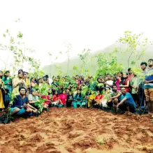

Gitamritam 2k18’Yuva
This is the wonderful camp I ever attended before, previously during my school age I attended a yoga camp in 5th standard but this is completely different from all the other camps, I’m here to describe my experience of my Gitamritam camp.
I never dreamed that I will wake up early in the morning at 4:30 am and spend my days without mobiles & laptops. but true I spent my whole camp without mobiles, This is really fantastic. After submitting my phones in the very starting day of the camp, This camp made me to completely forget about phones and made me to completely involve in the camp, I never remembered about WhatsApp, Facebook during the entire camp, As I met many people and had all new friends. This made me interact with new people.
We had a yoga and meditation sessions every day, This session brought my lazy body as active. Our master thought the Gita lesson’s by conducting the indoor games, those games are connected to one or other way to our life’s, Learning Gita in a practical way is the beauty of Gitamritam.
Dyanji’s and Shankar were our masters in Gitamritam programme, those teaching were never bored and was really extraordinary. We payed great attention and were completely involved in the classes, During our camp, we learned Bhagavad Gita 3rd adhyaya about karma yoga.
During the camp, we planted trees, played games, enjoyed swimming, involved in activities. In the end, we all learned Gita in every activity we performed.

During our camp Vasanth Kumar Gupta (retired IFS officer), Manickya Vasagam (associated project director at DRDO) and Nityashree Mahadevan (Carnatic musician), Deepika Bharadvaj (generalist and fought for men’s rights) are invited to the Gitamritam Yuva camp as a Speakers, I inspired listening to their up’s and down’s and the way they tackle the difficulties in their life. Through this session, I was amazed and learned to tackle challenges in real life.
One of the activity is to cook, In this, we were made to form groups and make Gulabjam, Chapathi’s, Benda fry, rice, and dal. Initially we were confused to make this and later be worked together and finally, we made everything fantastic. As I was very week in cooking truly speaking I’m not even aware of cooking rice but working in a group together with friends is fantastic and fun.
We had spent a great time with many new people from different places, Amrita alumni’s, Ph.D. holders and also school children. I was shocked by seeing the enthusiasm and great courage of the little kids, I’m inspired and learned few little things from those kids that kid’s never waste food, they are punctual, show gratitude to everyone without any prejudice.
They are a lot to describe but practically not possible to describe everything here, few important lessons I have learned to respect every object from our footwear, developing gratitude, treating success and failure on the same line, detaching ourself’s from the objects and also persons living in present. I also got the main differences between need want and greed. This camp made me think about my goal of life and showed me the path to reach my goals.
I realized myself all the stories taught made me think about myself in it as a victim. I hope Gitamritam camp will also surely bring some trivial changes in you, So don’t miss this wonderful opportunity at Amrita Vishwa Vidyapeetham.
I specially thank Vipin sir and Bithin sir and all the seniors, As they made me attend this camp.
The working senses are superior to dull matter, Mind is higher than the senses, Intelligence is still higher than the mind, and He [the soul] is even higher than the Intelligence. – Bhagavad Gita : KarmaYoga [3:42] –